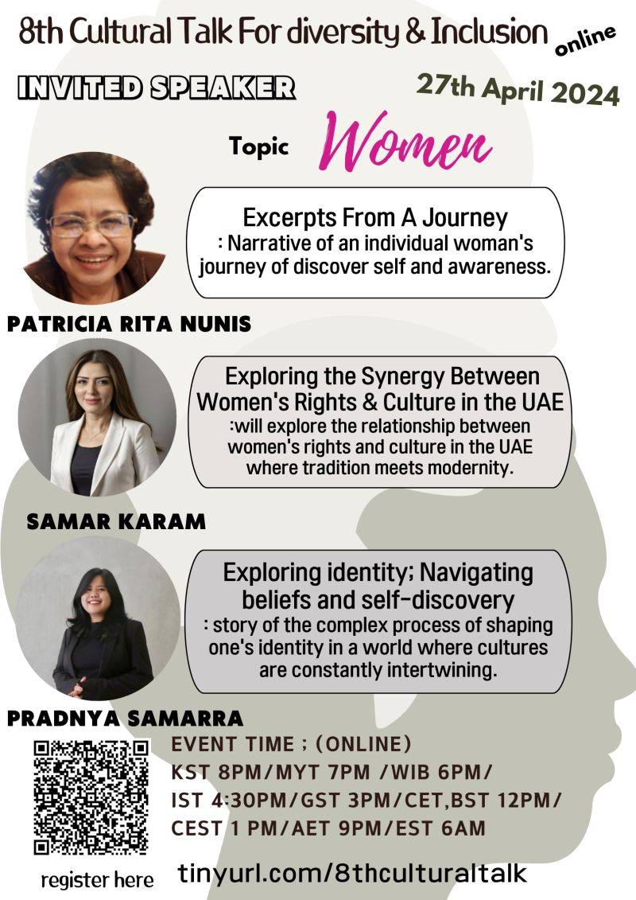
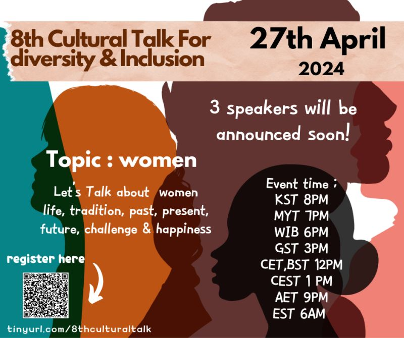
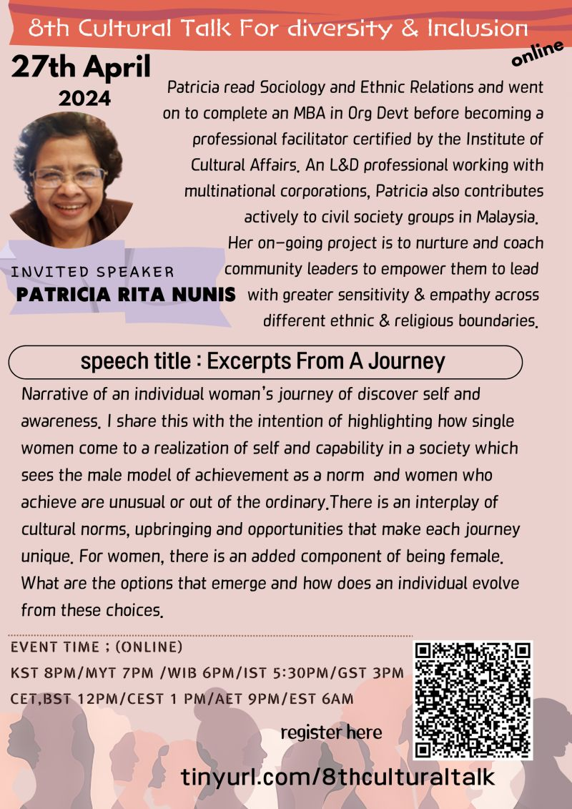
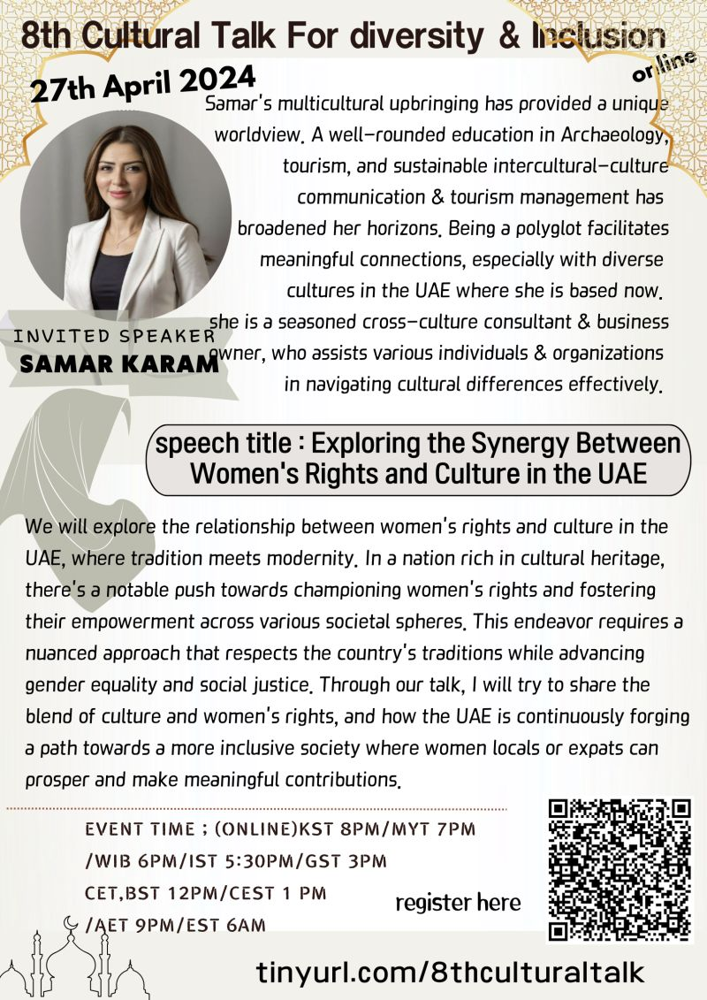
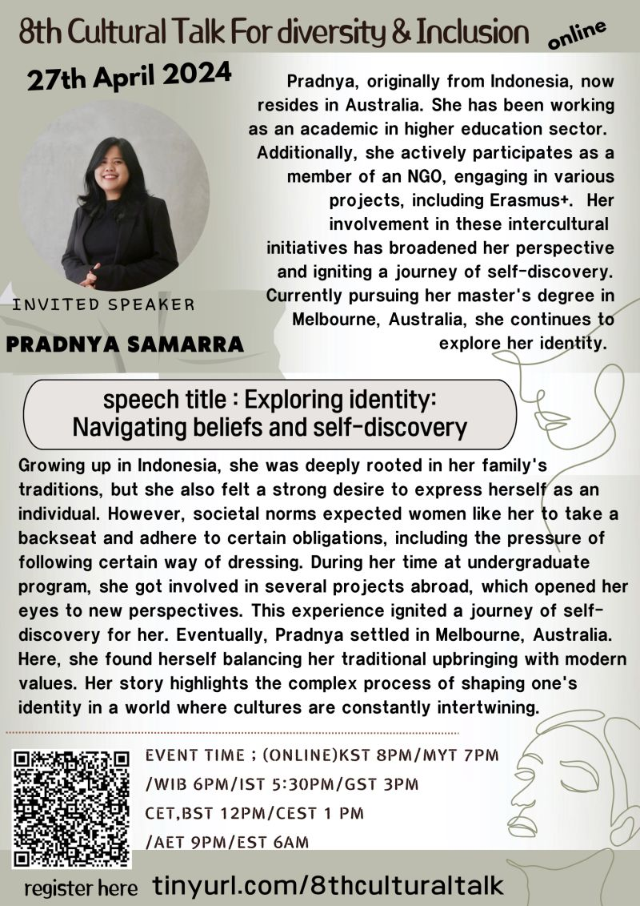

8th Cultural Talk For Diversity
Theme: Women

Event Details
Date: 27 April, 2024
Time: 20:00 (KST) / 19:00 (MYT) / 18:00 (WIB) / 17:30 (IST) / 15:00 (GST) / 13:00 (CEST) / 12:00 (CET / BST) / 21:00 (AET) / 06:00 (EST)
This event has already taken place and is now part of our archive.
Conference Overview
This session invited participants to reflect on women’s lives across cultures through stories of self-discovery, social expectation, rights, and empowerment. By bringing together voices connected to Malaysia, the UAE, Indonesia, and Australia, it highlighted how gender is shaped by both intimate experience and broader cultural systems.
Additional Event Posters


Patricia Rita Nunis
Facilitator and learning & development professional
Patricia Rita Nunis is a Malaysian facilitator and learning-and-development professional with an MBA in organizational development and certification from the Institute of Cultural Affairs. She also contributes actively to civil society and coaches community leaders across ethnic and religious boundaries.
Topic: Excerpts From A Journey
Patricia shared an individual woman’s journey of self-discovery and awareness within a society where male-centered achievement is often treated as the norm. Her talk reflected on how culture, upbringing, and opportunity shape women’s evolving choices and agency.

Samar Karam
Cross-cultural consultant and business owner
Samar Karam has a multicultural background and training in archaeology, tourism, and sustainable intercultural communication. Based in the UAE, she supports individuals and organizations in navigating cultural differences effectively.
Topic: Exploring the Synergy Between Women's Rights and Culture in the UAE
Samar explored how women’s rights and cultural tradition interact in the UAE, where heritage and modernity are continuously negotiated. Her talk emphasized the importance of respecting context while still advancing inclusion, equality, and meaningful participation.

Pradnya Samarra
Academic and intercultural project contributor
Originally from Indonesia and now based in Australia, Pradnya Samarra has worked in higher education and participated in multiple intercultural projects, including Erasmus+ initiatives. Her ongoing academic and personal journey continues to deepen her exploration of identity.
Topic: Exploring Identity: Navigating Beliefs and Self-Discovery
Pradnya reflected on balancing traditional expectations with a desire for individual expression across different cultural settings. Her story traced how study abroad, intercultural projects, and migration opened new perspectives on identity and belonging.